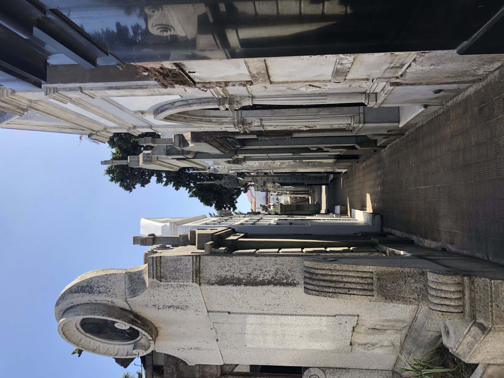
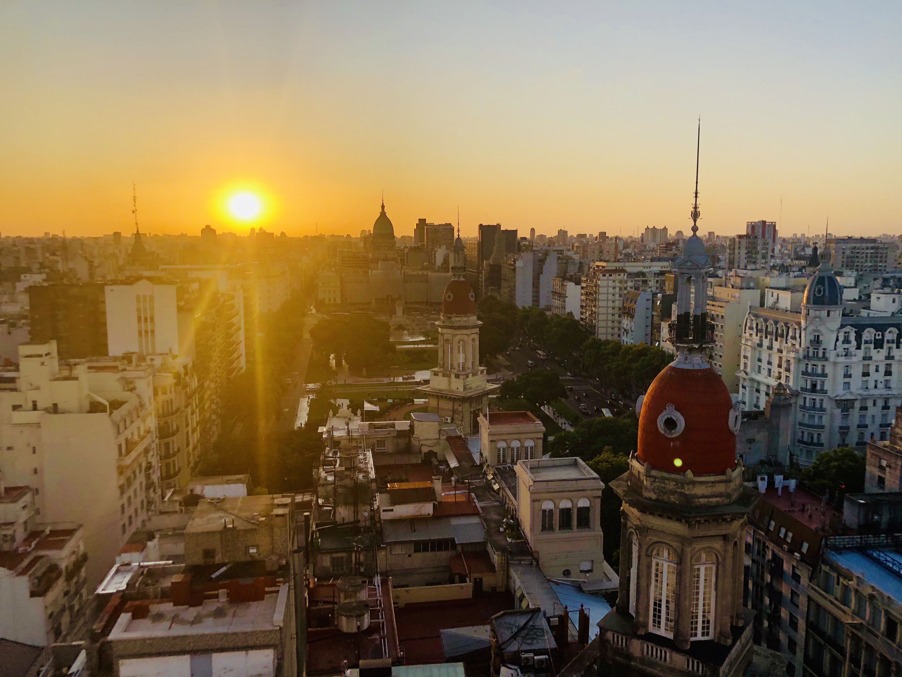
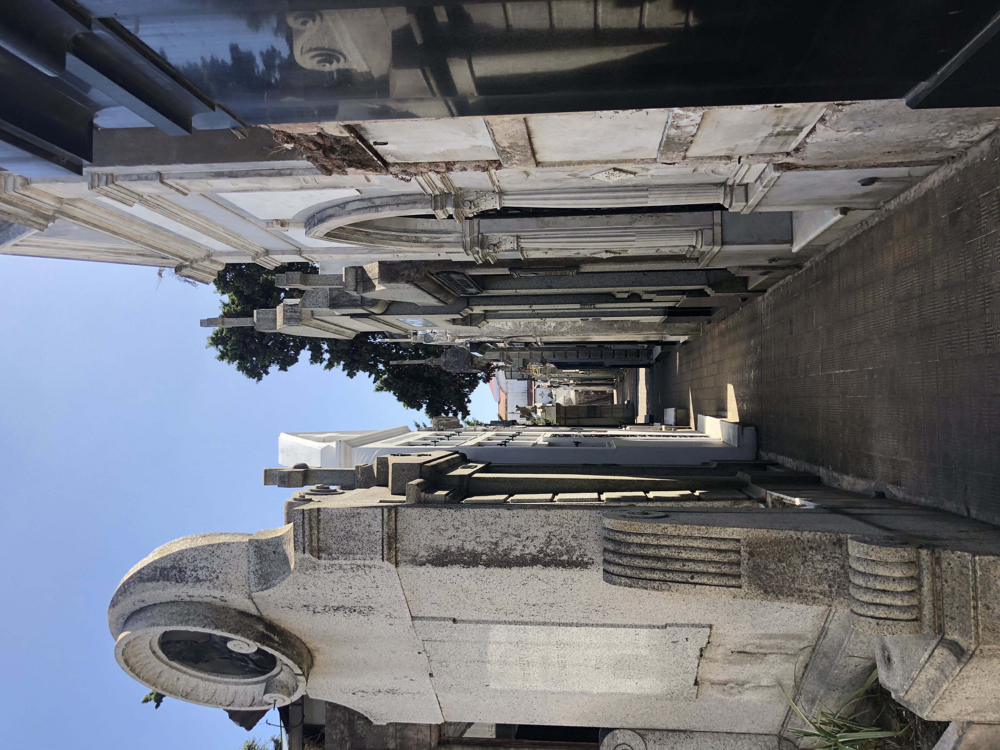
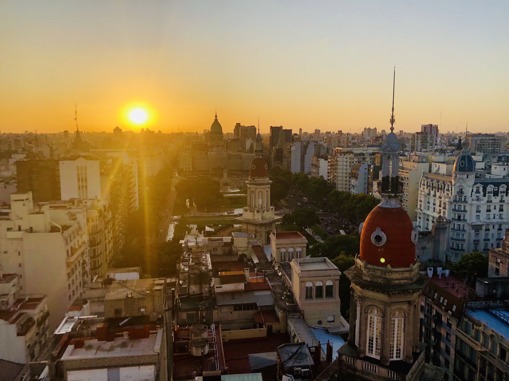

Argentina
Buenos Aires
Buenos Aires is a beautiful city. I arrived here alone, to meet up with a travel company where I wouldn't know anyone I was traveling with. I was nervous, intimidated, and a little overwhelmed. And jet lagged. However, I navigated my way to the hotel and was struck by how lovely the streets of Buenos Aires were. And as I started walking around, I was less intimidated. Everyone speaks Spanish, which I knew a little of, but more importantly was very accodating to my half Spanish, half English plus hand gestrues approach to communication. I loved wandering around Buenos Aires. The top two things I would reccomend are visiting the Recoleta Cemetary. It might sound creepy, but the headstones are no ordinary cemetary markers. The second thing is to check out La Boca. It is a neighborhood that is so colorful and fun-- it's very touristy but I thought it was worth it.Must do: La Boca. And drinks at Salon 1923
 



Iguazu Falls
I visited both sides of Iguazu Falls- the Argentinian side and the Brazilian side. Both sides were amazing, and if you can do it this way I would reccomend it. In general, Iguazu Falls was beautiful. It wasn't like other waterfalls I've seen. Iguazu's allure is in the sheer quantity of waterfalls (as opposed to height, width, etc.). There is still a look out point where the water narrows and you get that roaring, spraying waterfall power. I would say you need at least 2 days to explore the park. The whole thing is beautiful. You can take helicopter rides to get the magnitude of what you're seeing (which I did, and loved. Pictures someimes can't do it justice.Must do: Take a boat down to the base of the falls